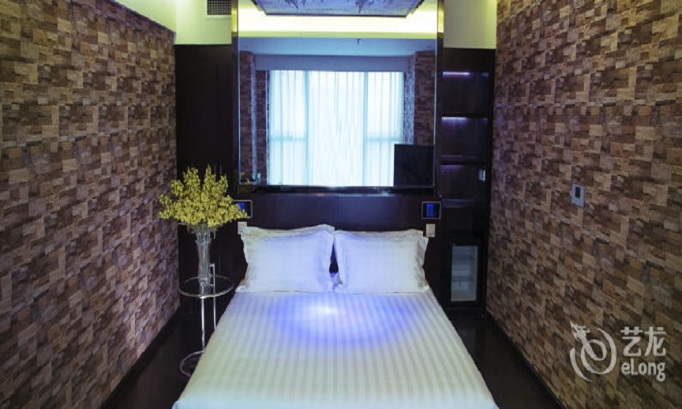

酒店名称：桔子酒店·精选（乐山嘉定中路店）
推荐指数：★★★
简介：酒店名称：桔子酒店·精选（乐山嘉定中路店）是中青旅控股股份有限公司旗下酒店，位于乐山市市中区大佛景区嘉定坊A区（乐山大佛游客中心前行约50米），临近乐山大佛、东方佛都、乌尤寺、八仙洞、峨眉山、东风堰、千佛岩等景点。这是一家中式园林休闲度假酒店，以书院文化和以“琴、棋、书、画、曲、绣”九雅文化为主题房型，打造出独具特色的古朴风格。全智能化服务系统，酒店房间全房型地暖、中央空调、智能马桶、电动窗帘、智能洗衣机、高清电视。无线网络Wi-Fi均已全面覆盖，均配置舒适典雅的家具，尽享舒适温馨，为您创造一个温馨、舒适的轻奢居旅之所。 “里院子”餐厅典雅精致独具韵味，可品尝到滋味可口的自助营养早餐、各式风情美食结合本地特色美食，感受嘉州本地饮食文化，让您流连忘返。“草木堂”茶室，传统中式古典风格，精挑细选的香茗，茶香四溢；茶室环境幽雅，山水、花鸟隐于繁华闹市中，同时也有一股“文”的气息。息。
地址：[乐山大佛] 大佛景区嘉定坊A区(近游客中心,张公桥美食街)
价格：¥632.82起